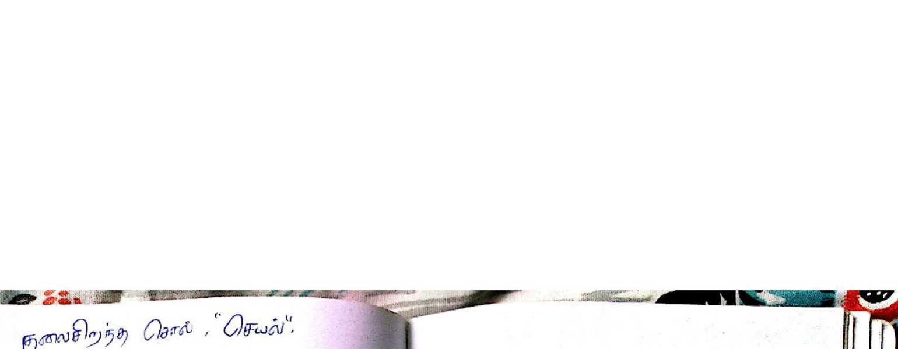

In structural geology and underground mining (Billings, Structural Geology, Appendix B; Fossen, Ch. 2; Van der Pluijm & Marshak, Ch. 1), true dip ($\delta$) is the maximum angle of inclination of a planar structure measured perpendicular to the strike line. In any other vertical cross-section oriented oblique to the true dip direction, the observed inclination is the apparent dip ($\delta'$), which is always less than the true dip:
$$\delta' < \delta \quad (\text{for any angle } \alpha > 0^\circ)$$The universal trigonometric formula relating true dip ($\delta$), apparent dip ($\delta'$), and the angular deviation between their azimuth directions ($\alpha$) is:
$$\mathbf{\tan(\delta') = \tan(\delta) \times \cos(\alpha)}$$Where:
| Bearing of Oblique Section Relative to True Dip | Angular Offset ($\alpha$) | $\cos(\alpha)$ | Resulting Apparent Dip ($\delta'$) |
|---|---|---|---|
| Parallel to True Dip Direction | $\alpha = 0^\circ$ | $\cos(0^\circ) = 1.0$ | $\tan\delta' = \tan\delta \implies \mathbf{\delta' = \delta}$ (Maximum inclination) |
| Oblique to True Dip Direction ($0^\circ < \alpha < 90^\circ$) | e.g. $\alpha = 25^\circ$ | $\cos(25^\circ) \approx 0.906$ | $\mathbf{\delta' < \delta}$ (Intermediate apparent dip) |
| Parallel to Strike Direction | $\alpha = 90^\circ$ | $\cos(90^\circ) = 0.0$ | $\tan\delta' = 0 \implies \mathbf{\delta' = 0^\circ}$ (Horizontal line) |

Correct Answer: (D) 45° — Applying the apparent dip equation for a vein dipping $\delta = 50^\circ$ toward $\text{N}45^\circ\text{W}$ when viewed toward $\text{N}20^\circ\text{W}$ gives an angular offset $\alpha = 25^\circ$, yielding an apparent dip of $\delta' \approx 47.2^\circ \approx \mathbf{45^\circ}$.
1. Identify the given parameters:
2. Calculate horizontal angular difference $\alpha$:
$$\alpha = |45^\circ - 20^\circ| = 25^\circ$$3. Apply the nomographic apparent dip formula:
$$\tan(\delta') = \tan(50^\circ) \times \cos(25^\circ)$$Using standard trigonometric tables: $\tan(50^\circ) = 1.19175$, and $\cos(25^\circ) = 0.90631$:
$$\tan(\delta') = 1.19175 \times 0.90631 = 1.08009$$ $$\delta' = \arctan(1.08009) = 47.20^\circ$$4. Match with exam options: Among the choices ($65^\circ, 60^\circ, 0^\circ, 45^\circ$), the only physically possible and closest answer is 45° (since apparent dip must be less than true dip $50^\circ$, options A and B are impossible, while $0^\circ$ is only along strike).
A coal seam has a true dip of $35^\circ$ due South ($180^\circ$). An underground haulage drift is driven along a bearing of $\text{S}60^\circ\text{W}$ ($240^\circ$). Calculate the apparent gradient (slope angle) of the coal seam along the wall of this haulage drift.
Solution:
1. The angular difference between true dip direction ($180^\circ$) and drift bearing ($240^\circ$) is:
$$\alpha = 240^\circ - 180^\circ = 60^\circ$$2. Calculate apparent dip using $\tan(\delta') = \tan(\delta) \cos(\alpha)$:
$$\tan(\delta') = \tan(35^\circ) \times \cos(60^\circ) = 0.7002 \times 0.5000 = 0.3501$$ $$\delta' = \arctan(0.3501) \approx 19.29^\circ$$The seam appears to dip at approximately $19.3^\circ$ along the haulage drift.